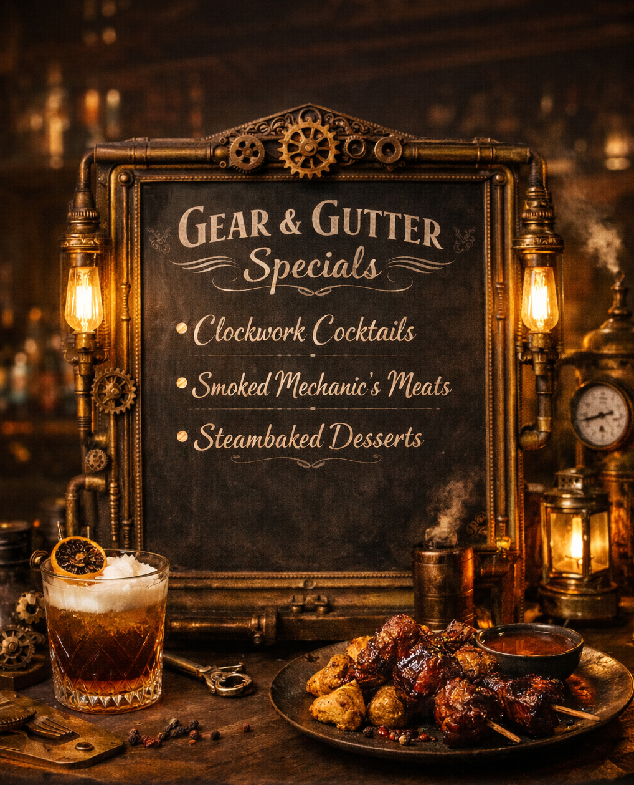

Viper’s Gambit
Absinthe elixir over serrano ice with hickory smoke, finished with a charred lemon and a candied serpent twist. Served only to those who know which door to knock on.
At The Gear & Gutter Speakeasy, the menu is a carefully guarded collection of indulgences designed for those who live just slightly outside the lines. Expect bold, spirit-forward cocktails, smoky infusions, and unapologetically rich flavors inspired by back-alley ingenuity and industrial-age decadence. Every pour, plate, and pairing feels a bit illicit — crafted with precision, served with attitude, and intended to linger long after the last gear stops turning.
Indulge in our house favorites, from craft cocktails to savory bites, with a few backroom temptations worth lingering over.

| ITEM | DESCRIPTION | PRICE | NOTES |
| Clockwork Widow | Gin infused with lavender steam, absinthe mist, lemon oil, and a drop of honeyed bitters. Floral at first sip — devastating by the last. | $14 | Popular • Strong |
| Boiler Room Burn | Spiced rye, smoked chili tincture, dark cherry reduction, and a spark of ginger. Warms like industrial heat — lingers like regret. | $13 | House Favorite |
| The Brass Knuckle Old Fashioned | Smoked bourbon, blackstrap molasses syrup, charred orange peel, and a whisper of clove. Served over a single iron-cut cube. Hits first. Asks questions later. | $14 | Spicy • Strong |
| Contraband Bone Marrow Toast | Roasted marrow, cracked black pepper, shallot relish, and charred sourdough. Rich enough to make you reconsider your loyalties. | $11 | Popular |
| Underground Short Rib Sliders | Slow-braised beef, molasses glaze, smoked cheddar, and pickled brassica on toasted brioche. Built for backroom negotiations. | $12 | Hearty • Popular |
| Gutter-Fried Steam Dumplings | Crisp-edged pork dumplings with black garlic soy glaze and ember-roasted scallions. Best enjoyed while pretending you’re not here. | $10 | House Favorite |
| COMBO | INCLUDES | PRICE | NOTES |
| Brass Knuckle Nightcap | The Brass Knuckle Old Fashioned, Contraband Bone Marrow Toast | $21 | Popular |
| The Clockwork Pairing | Clockwork Widow, Gutter-Fried Steam Dumplings | $19 | House Favorite |
| Boiler Room Deal | Boiler Room Burn, Underground Short Rib Sliders | $20 | Spicy |
| The Backroom Plate | Contraband Bone Marrow Toast, Gutter-Fried Steam Dumplings | $16 | Popular |
| Negotiator's Special | Underground Short Rib Sliders, Brass Knuckle Old Fashioned | $22 | Hearty |
| The Underground Trio | Gutter-Fried Steam Dumplings, Short Rib Slider, Clockwork Widow | $23 | Popular |
Rumor says if you whisper the password to the right lock…
Absinthe elixir over serrano ice with hickory smoke, finished with a charred lemon and a candied serpent twist. Served only to those who know which door to knock on.